Hello, good people of the internet! Welcome back to what will perhaps be the quickest, swiftest analysis we will make of an episode. I apologize in advance for the little content this week’s comparison will offer, but that’s just how things are, I’m afraid. Without further ado, let’s not make this needlessly longer, and let’s plunge into episode #03 of Stardust Crusaders, “The Curse of Dio”!
- Let’s begin with… the only different scene in this episode! Here, you can see that Holly, her panties and the futon she’s sleeping under have been shaded slightly differently…:
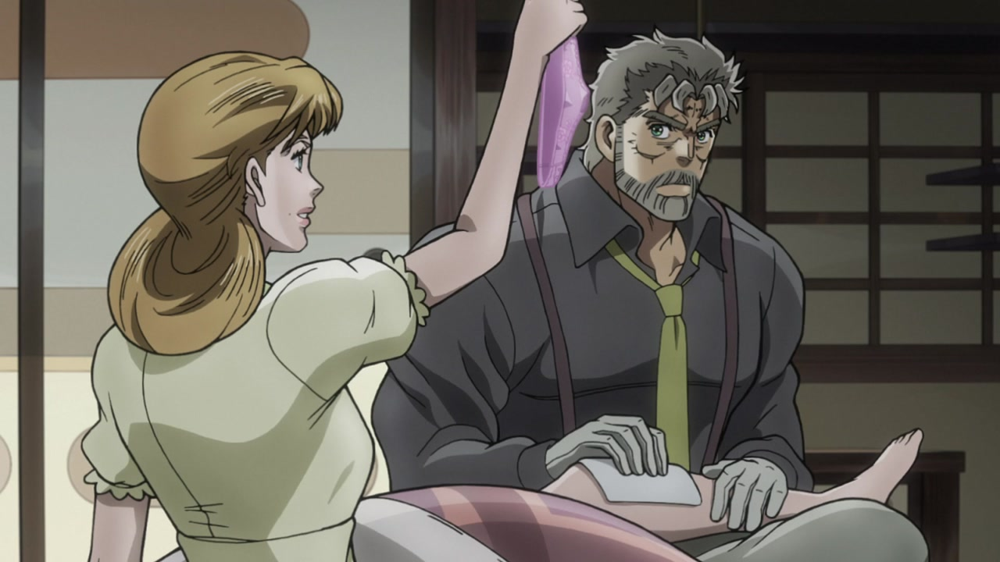
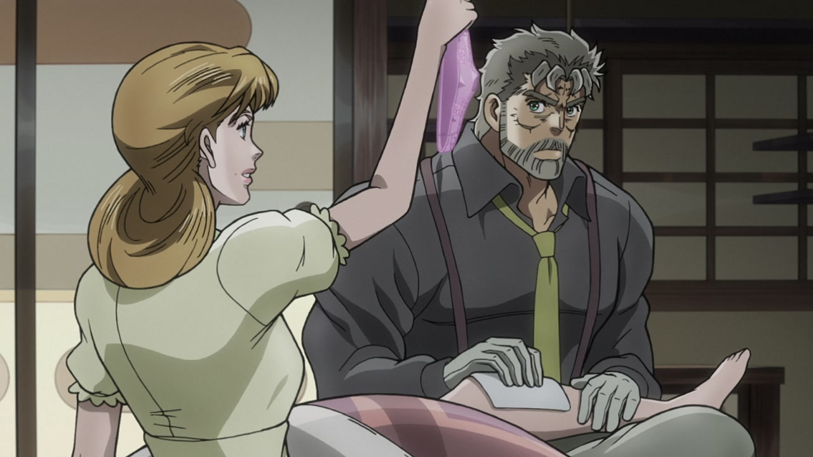
- … The mouth flap animation in this scene is also a little different…:
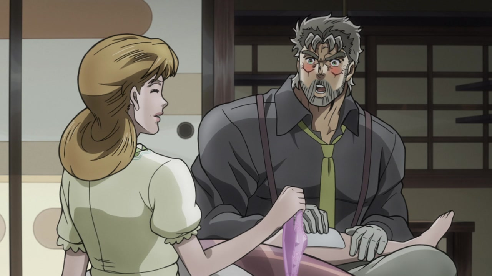
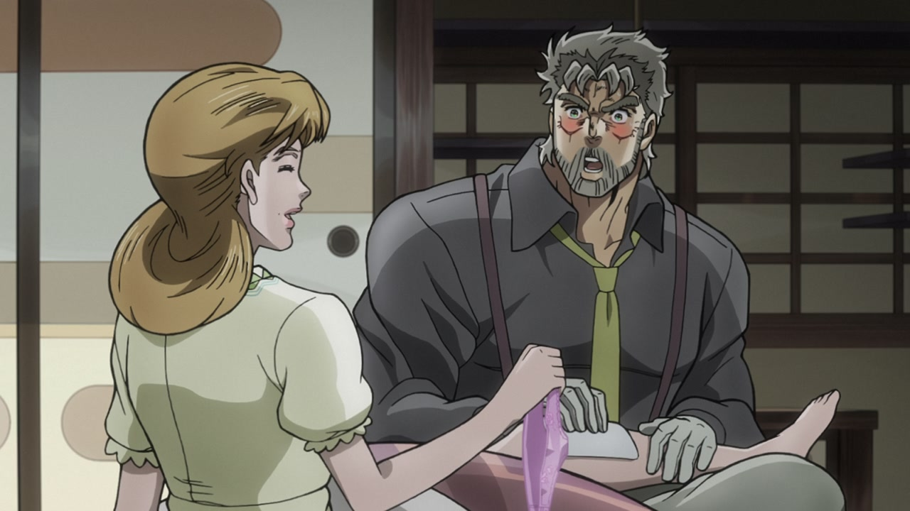
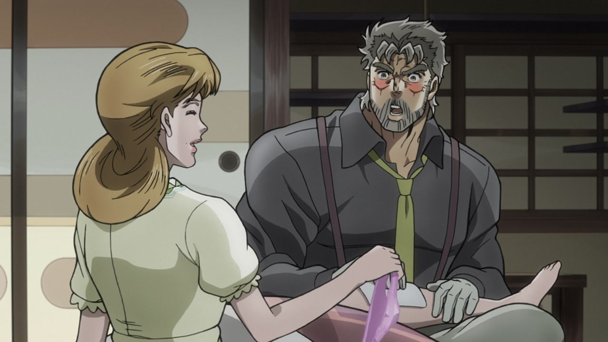
- … and in a couple of frames, Holly is now sporting her dimple, which was missing in the TV version. Very important:
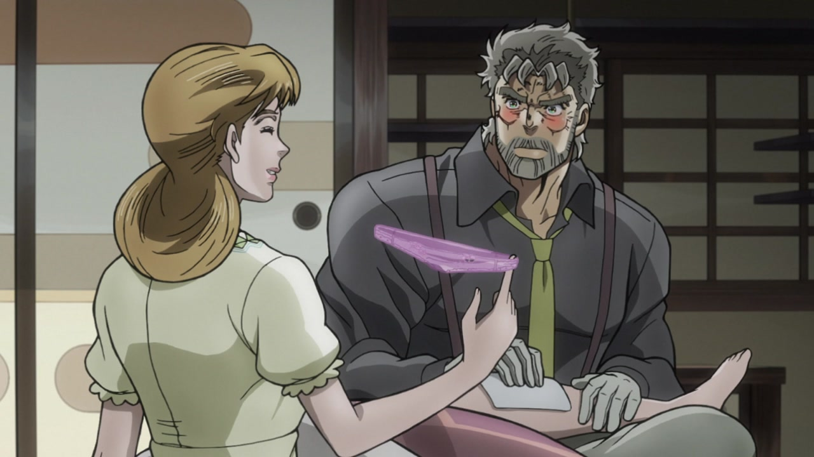
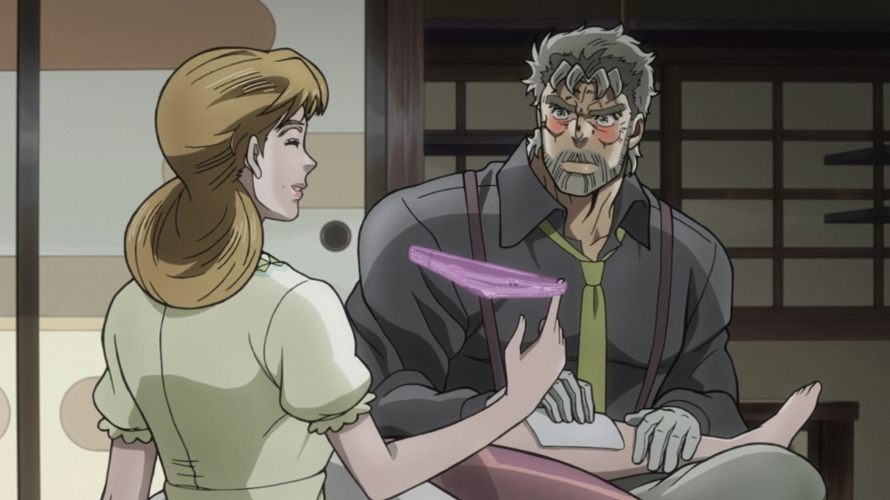
- Aaand let’s quickly move to the credits, for a further couple of differences! This episode was the first one with a proper ending sequence, and here you can see that this bit has been made brighter and sharper in the BDs:
- And, as you might have noticed, towards the end of the previous animation the credits have also been moved to the right, like so:
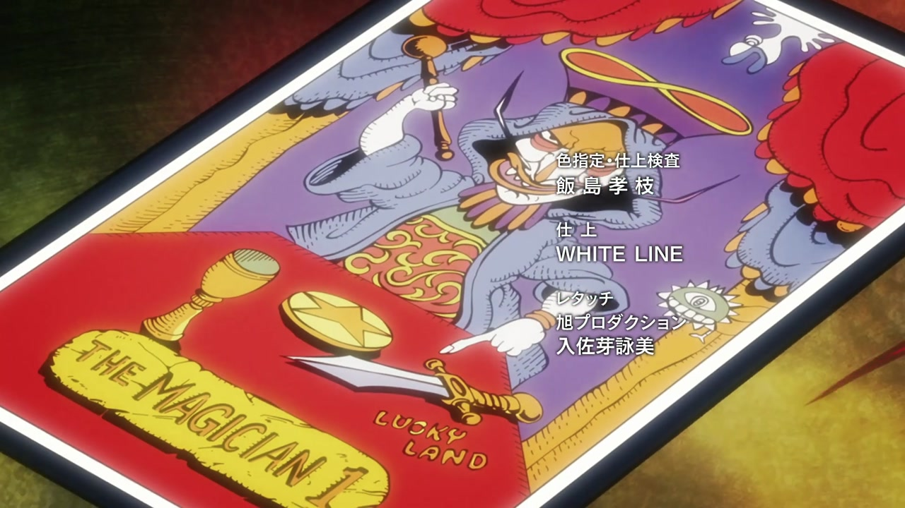
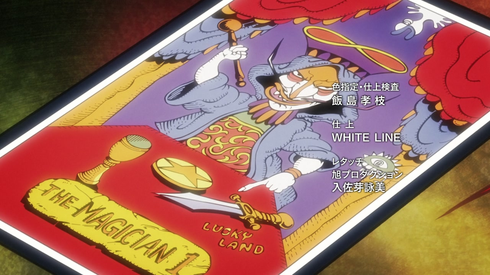
- Here’s something I never, ever noticed! In the TV version of this bit here, Avdol had two right hands…! Is Avdol the man who really killed Polnareff’s sister?! Was J. Geil just an innocent man, framed by Avdol for a crime he did not commit?! Avdol even faked his death in the very same episode… Was it just to throw everyone off? Follow this blog for more shocking revelations:
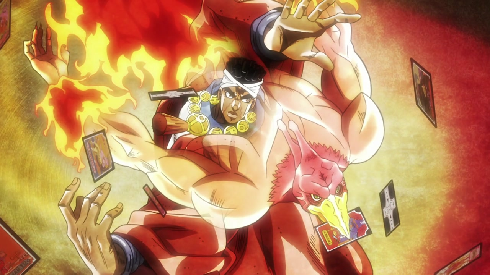
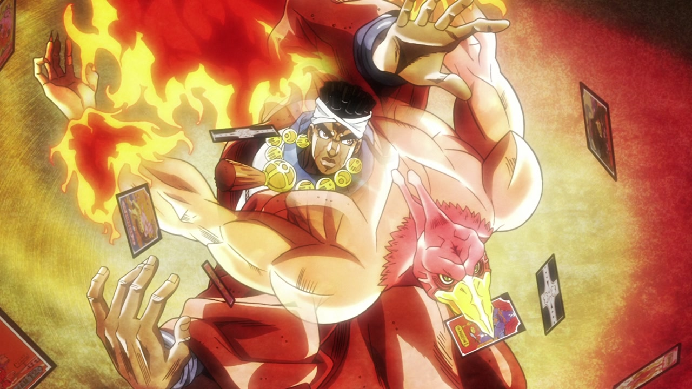
- As usual, マベリカ (Maverica) has been added to the credits here:
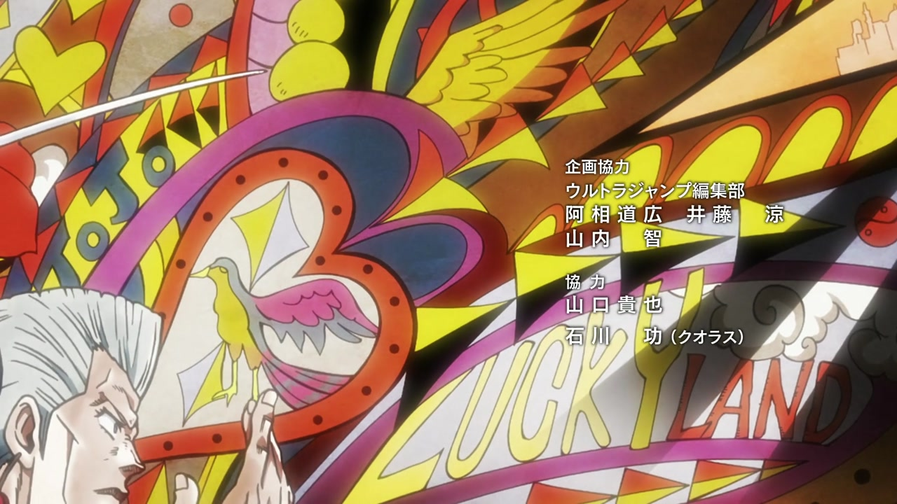
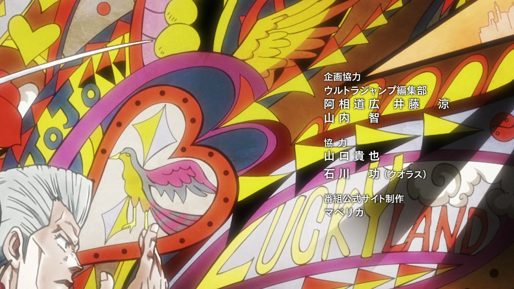
- As in episode #01, 服部健太郎 (Hattori Kentarо̄) has been added here too (third group from the top):
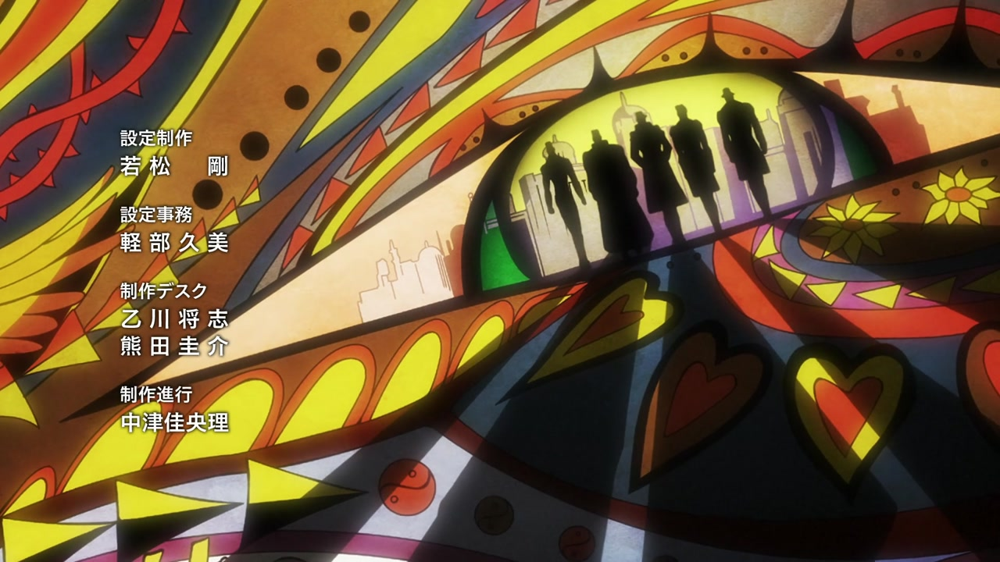
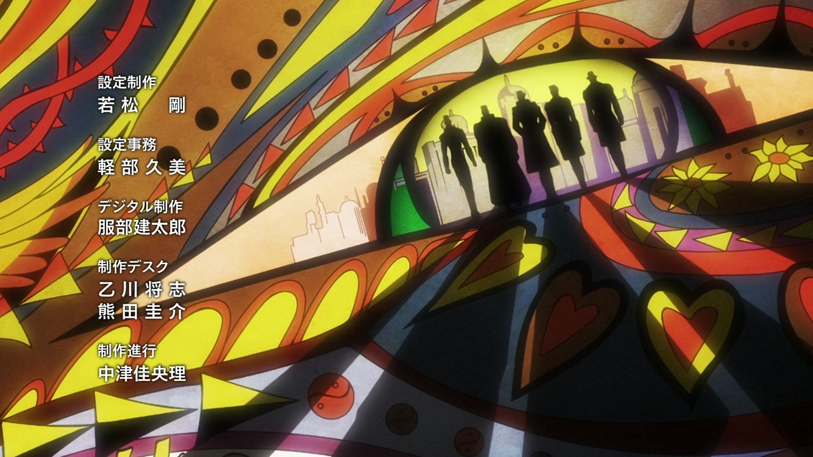
And that’s it for this week, I’m afraid! But fear not, for next week will surely deliver uncensored wounds aplenty and pierced tongues in abundance!
Well, see you then!